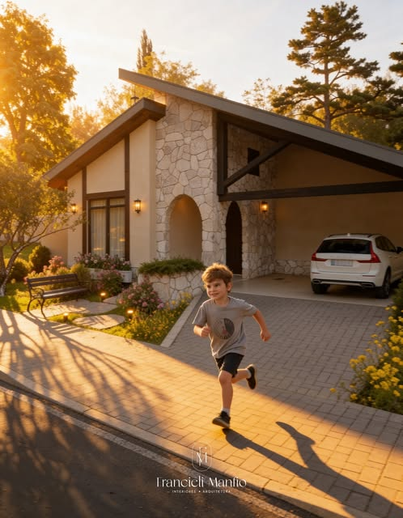
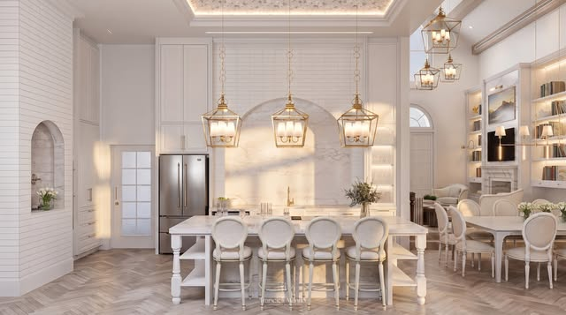
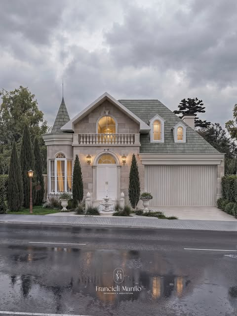
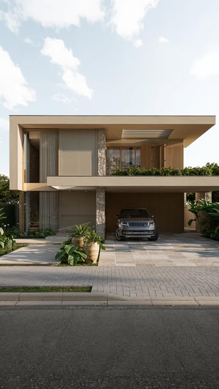
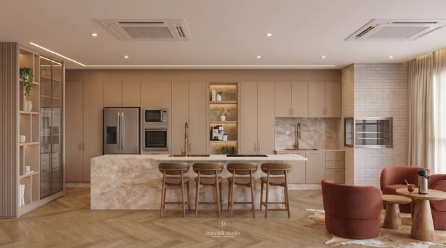
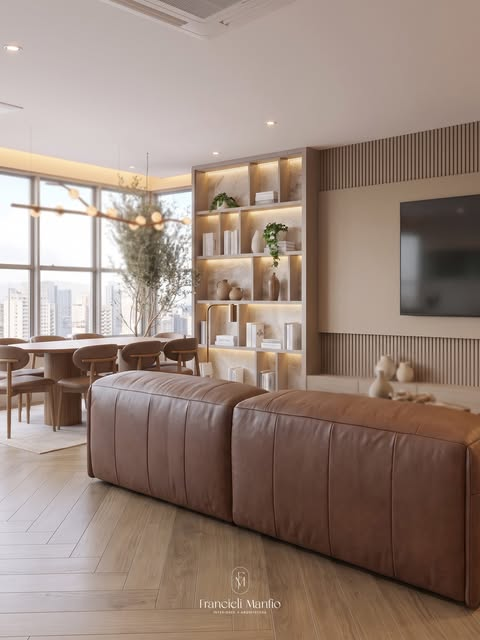
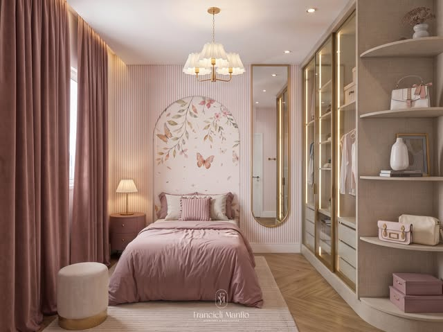
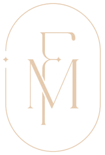

Escuta de verdade
Cada projeto nasce de conversas sem pressa. Seu jeito de viver é o ponto de partida, não um detalhe.
Arquitetura humanizada · Nova Mutum, MT
Arquitetura residencial e interiores pensados a partir de quem vai viver em cada espaço. Aqui existe aconchego, alma, modernidade e tradição.

Prazer, Francieli
Quando criança eu não sabia que seria arquiteta, mas no The Sims a única coisa que eu fazia era construir a casa dos personagens. Hoje construo, de verdade, os lares de famílias reais.
Acredito que um bom projeto começa com uma boa conversa. Antes de pensar em materiais e medidas, quero entender como você vive, o que te faz bem e o que você espera sentir ao chegar em casa.
Não é sobre não saber por onde começar. É sobre ter ao seu lado alguém que conduza o caminho e torne todo o processo mais leve.
O que guia cada projeto
Cada projeto nasce de conversas sem pressa. Seu jeito de viver é o ponto de partida, não um detalhe.
Luz natural, ventilação, conforto e circulação pensados para que a casa cuide de quem mora nela.
Memórias, objetos e histórias da família ganham lugar no projeto, para que o espaço tenha a sua cara.
Como trabalho
Nos conhecemos, você me conta seus planos e eu explico como funciona cada etapa.
Visito o espaço, entendo a rotina da família e levanto necessidades, gostos e orçamento.
Apresento a ideia do projeto com layouts e imagens 3D, ajustando tudo junto com você.
Detalho cada medida, material e acabamento para que a obra aconteça sem surpresas.
Sigo ao seu lado durante a obra, orientando fornecedores até o espaço ficar pronto.
Serviços
Projetos de casas do zero, pensados para o terreno, o clima de Mato Grosso e a família que vai viver ali, do clássico ao contemporâneo.
Ambientes reorganizados e decorados para ficarem práticos, bonitos e com a sua identidade.
Novos usos para espaços que já existem, aproveitando o que tem valor afetivo e resolvendo o que incomoda.
Presença do início ao fim, orientando fornecedores para que o que foi sonhado vire realidade.
Projetos






Quem já viveu esse processo

Vamos conversar?
Sem compromisso: o primeiro passo é só uma conversa.
Chamar no WhatsApp